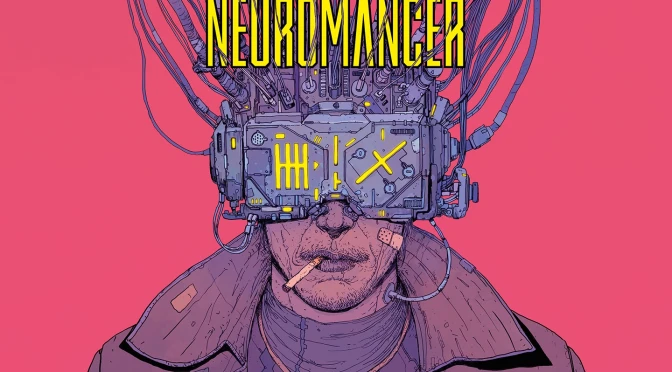

Neuromante

"Neuromante" es una novela de ciencia ficción escrita por William Gibson que marcó el inicio del
subgénero cyberpunk. La historia sigue a Case, un hacker caído en desgracia, que es contratado para
realizar un último trabajo en un mundo dominado por megacorporaciones, inteligencia artificial y un
ciberespacio que redefine la realidad.
En la sociedad actual, la obra resuena más que nunca, ya que vivimos en una era donde la tecnología
y la conectividad digital moldean nuestras vidas. La dependencia de las redes, la vigilancia masiva
y el poder de las grandes corporaciones son temas que Gibson anticipó con precisión.
Desde una perspectiva filosófica, "Neuromante" puede ser comparado con las teorías de Jean
Baudrillard sobre la hiperrealidad, donde las simulaciones y las realidades virtuales se vuelven
indistinguibles de lo real. Asimismo, plantea preguntas existenciales similares a las de Martin
Heidegger sobre la relación del ser humano con la tecnología y cómo esta redefine nuestra esencia.
La novela no solo es una obra de ficción, sino también una reflexión sobre el impacto de la
tecnología en la humanidad, explorando los límites entre lo humano y lo artificial, y cuestionando
el futuro de nuestra identidad en un mundo cada vez más digitalizado.